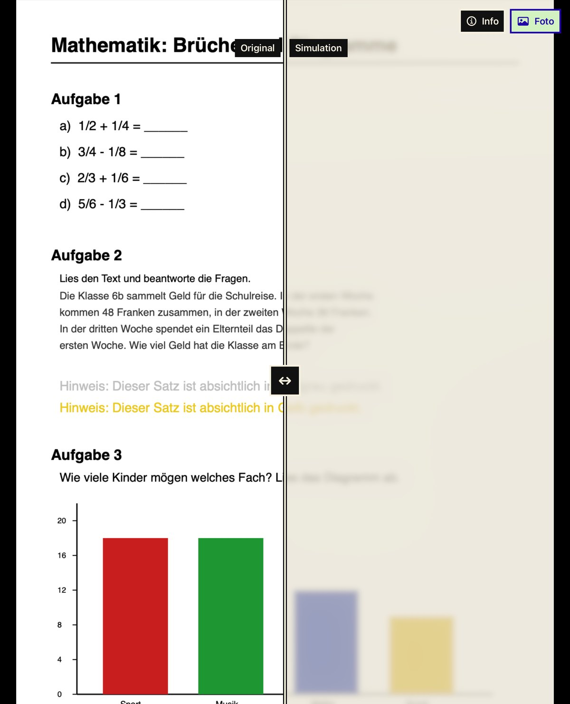

LV Simulator
Richte die Kamera auf ein Arbeitsblatt, eine Tafel oder einen Raum und sieh eine Annäherung an Trübung, Gesichtsfeldausfall, Blendung oder Farbsehschwäche. So erkennst du, was du an deinem Material verbessern kannst.
Für wen die App gedacht ist
Für Lehrpersonen, Heilpädagoginnen und Heilpädagogen und alle, die Material für Kinder und Jugendliche mit Sehbeeinträchtigung vorbereiten.
Was die App kann
Vier Gruppen von Effekten
Trübung, Gesichtsfeld, Blendung und Kontrast sowie Farbsehen. Jeder Effekt hat einen Regler von 0 bis 100 Prozent, alle lassen sich kombinieren.
Fünf Profile
Makuladegeneration, Retinitis pigmentosa, Grauer Star, Blendempfindlichkeit und Rot-Grün-Schwäche als Ausgangspunkt, je in einfachen Worten erklärt.
Vergleichen und anhalten
Original und Simulation nebeneinander mit verschiebbarer Trennlinie. Bild anhalten oder ein Foto aus der Mediathek laden, zum Beispiel ein eingescanntes Arbeitsblatt.
So sieht es aus

So funktioniert es
- Kamera richten: Auf ein Arbeitsblatt, eine Tafel oder einen Raum.
- Effekt wählen: Ein Profil antippen oder die Regler selbst einstellen.
- Material verbessern: Sehen, wo Kontrast, Schriftgrösse, Layout oder Farben noch klarer werden können.
Ehrlich gesagt
Die Simulation ist eine Annäherung. Sehbeeinträchtigungen sind bei jedem Menschen anders, und das Gehirn gleicht vieles aus. LV Simulator stellt nichts fest und ersetzt keine Abklärung durch eine Fachperson.
Entwicklung und Kontakt
Für iPhone und iPad, in Entwicklung. Wie meine anderen Apps arbeitet LV Simulator lokal, ohne Internet, KI, Werbung und Nutzungsanalyse. Fragen oder Anregungen? support@sichtnah.com